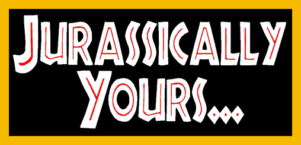
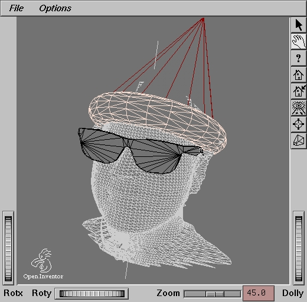
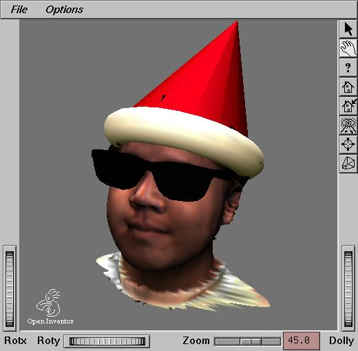
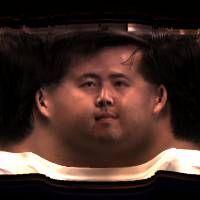

(Christmas 1993)
Cyber Yules
It was that time of the year again. Time to brush off the dust and cobwebs on the Cyberware 3D model of yours truly and put a santa's hat on it. It was Christmas 1993, and time to make my 2nd annual CGI Christmas card.
After looking at the card from Christmas 1992 titled, "Sittin' on the Dock of the Bay," it was obvious that many improvements could be made this year. The main objective for this year's card was to make every element be in the 3D domain, as opposed to last year's hack which overlayed separate 3D elements into one 2D composite in the bitmap domain. So without a raytracer, I once again set out to push our Onyx RealityEngineII (known appropriately as k2.csd.sgi.com) to its polygonal limit.
The following 2 images (the first one in wireframe, the second one gouraud-shaded) show the modelling and composition of the sAntA sAmbO character. A santa's hat was quickly modelled using Inventor's cone and torus primitives. Then the Wayfarers sunglasses were modelled and slapped onto the head. Voila, sAntA sAmbO is done.


This is the Cyberware texture map generated by the 3D scanner. I lied. I decided to show what my face would indeed look like if it were rolled over by a steamroller on a concrete pavement. Then there's the orange peel thing that I still won't go into.

VRML
After mapping the "orange peel" onto the underlying 3D geometry, the model can be rotated and manipulated with the texture glued on tight. This is the same type of technology used in the motion picture T2.
The hottest buzzword in the web community right now is VRML (Virtual Reality Modeling Language). This technology allows one to bring up remote 3D spaces locally and navigate through them. There are hyperlinks within that take you to other 3D worlds too. Using WebSpace (SGI's VRML-viewer based heavily on Inventor), you can navigate and look around this 3D model of sAntA sAmbO.
"On the 2nd day of Christmas my true love......"
While sitting around staring blankly at k2.csd.sgi.com (RealityEngineII), trying to come up with an interesting idea for the card, I remembered that I had some Viewpoint DataLabs dino models laying around. I thought to myself, "Wouldn't it be cool to create my own version of the T-rex Paddock scene from the movie?" I could be trapped in my Italian sports car while the dinos are converging on me, sniffing out their prospective supper. So that was it. And this is the result......

{kind=link}
{kind=link}
{kind=link}
Technically speaking, the entire image was done using straight IRIS Inventor and IRIS Showcase 3D. Notice advanced graphics techniques were used in the scene such as environment mapping, alpha blending, antialiasing, multi-sampling, and texture mapping to put the reflection onto the windshield and give the water some transparency.
Because of the lack of a decent color printer, I used an old-fashion technique of photographing my high-resolution monitor with standard 35mm equipment and made 6x4 prints to be given out. Phew!
Come to think of it, maybe I should've just headed down to the local Longs Drugs and bought a box of Garfield Christmas Greeting Cards instead.